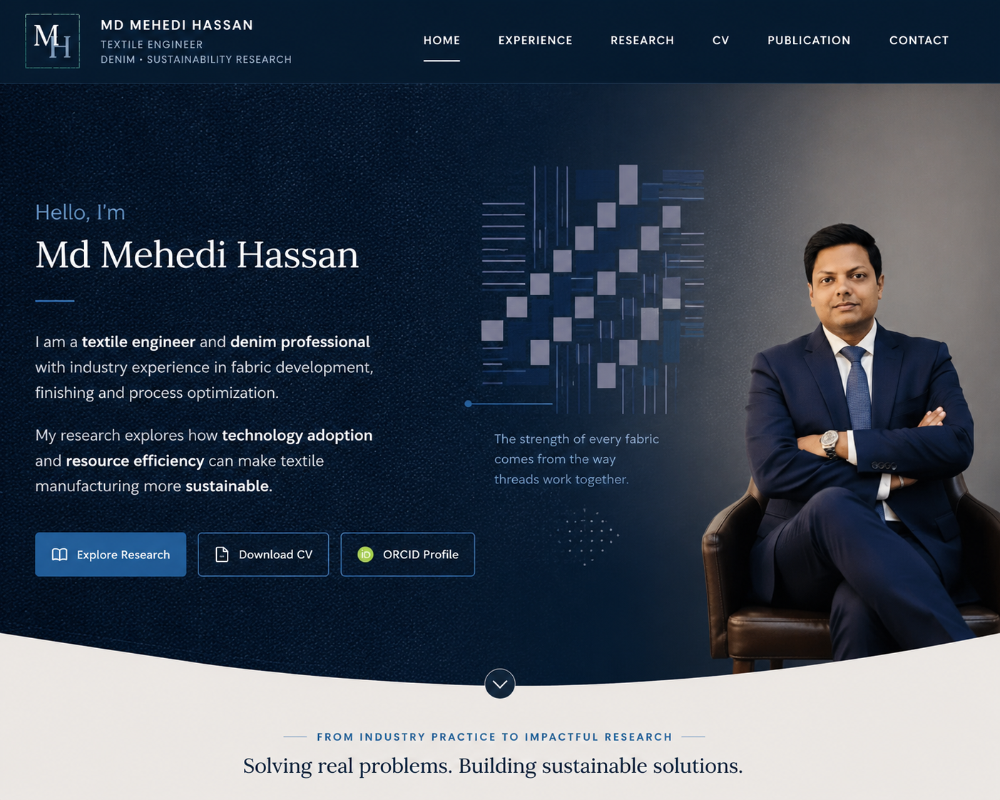

Continue exploring
Solving real problems. Building sustainable solutions.
EXPERIENCE
From intern to manager
RESEARCH
Industry-grounded sustainability research
CV
Academic and professional profile
PUBLICATION
Published research and DOI
Contact
Md Mehedi Hassan
Email: mehedihassan177@yahoo.com · LinkedIn: linkedin.com/in/mhassan177